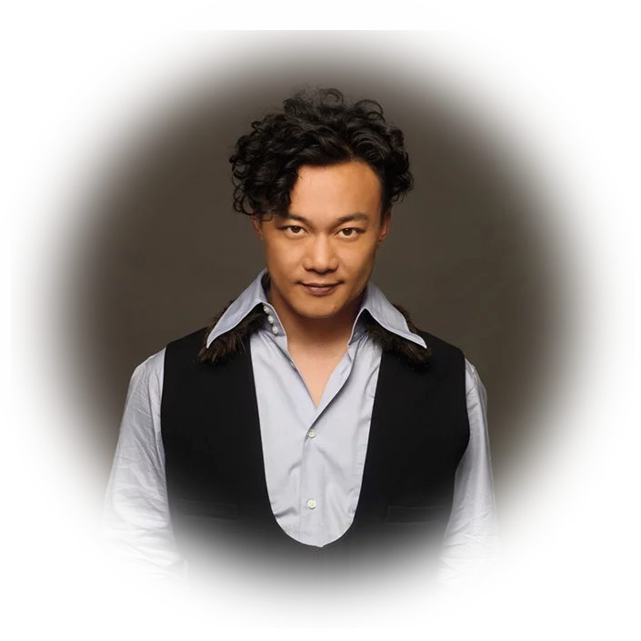

陈奕迅（Eason Chan，1974年7月27日－），香港著名歌手、演员，
香港演艺人协会副会长之一。1995年在香港参加第14届新秀歌唱大赛，
正式踏入香港乐坛。1996年推出首张大碟《陈奕迅》，1998年推出
《 我的快乐时代》 并获得首个“叱吒乐坛至尊唱片大奖”。2003年成
为第二个拿到台湾金曲奖“最佳国语男演唱人”的香港歌手 。曾被美国
《时代》杂志形容为影响香港乐坛风格的人物。2009年... >>>